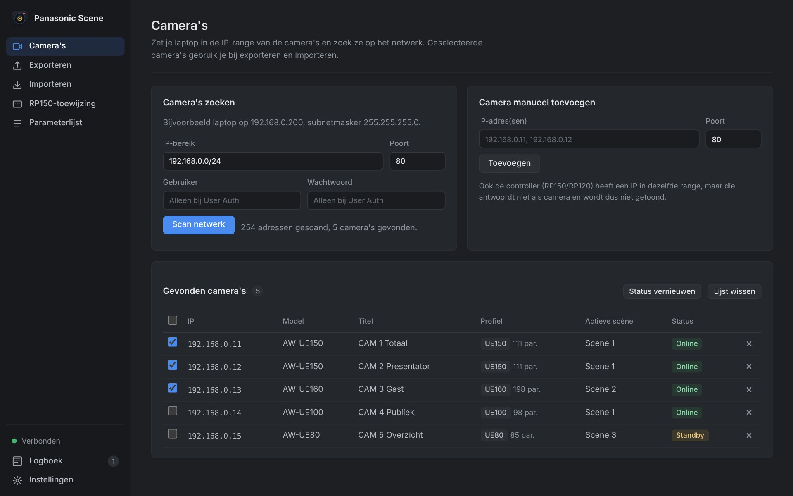

Scene files van Panasonic PTZ-camera's bewaren en terugzetten
Een AW-RP120 of AW-RP150 kan de shading van een camera niet exporteren. Panasonic Scene leest alle instellingen van een scène uit, bewaart ze in een bestand en zet ze terug op dezelfde of een andere camera.
Gratis voor macOS 11 of nieuwer en Windows 10/11.

Werking
De app draait op je laptop en praat via het netwerk met de camera's, met dezelfde commando's als een RP150. Internet is niet nodig.
Laptop in dezelfde IP-range zetten
Geef je laptop een vast adres in de range van de camera's, bijvoorbeeld 192.168.0.200 met subnetmasker 255.255.255.0, en sluit hem aan op dezelfde switch.
Camera's zoeken
Open Panasonic Scene en kies Scan netwerk. Elke PTZ verschijnt met model, titel en actieve scène. De controller zelf wordt niet als camera getoond.
Exporteren
Selecteer een of meer camera's en kies de actieve scène of scènes 1 tot 4 (tot 8 op de AW-UE160). Per camera krijg je een .pscene.json-bestand; meerdere camera's worden samen in een ZIP gezet.
Importeren
Open het bestand, kies doelcamera en doelscène en start de import. De app bewaart eerst de huidige instellingen als back-up en leest na afloop alles terug ter controle.
Downloaden
Gratis en zonder account. De app bevat alles wat hij nodig heeft; er hoeft niets anders geïnstalleerd te worden.
macOS
macOS 11 Big Sur of nieuwer
Mac met Apple-chip (M1–M4)Oudere Mac met Intel-processor? Download de Intel-versie
Of installeer via Terminal. Zo krijg je geen beveiligingsmelding bij het openen:
curl -fsSL https://seppevanaken.be/panasonicscene/install.sh | bashDe app de eerste keer openen
- Open het .dmg-bestand en sleep Panasonic Scene naar Programma's.
- De app is niet bij Apple geregistreerd, dus macOS meldt de eerste keer dat hij niet geopend kan worden. Klik op Gereed.
- Open Systeeminstellingen, ga naar Privacy en beveiliging en klik onderaan bij Panasonic Scene op Open toch.
- Vraagt macOS of de app apparaten op je lokale netwerk mag vinden? Kies Sta toe. Zonder die toestemming vindt de app geen camera's.
Windows
Windows 10 of 11, 64-bit
InstallatieprogrammaLiever zonder installatie? Download de portable versie
Of installeer via PowerShell:
irm https://seppevanaken.be/panasonicscene/install.ps1 | iexDe app de eerste keer openen
- Start het installatieprogramma. Beheerdersrechten zijn niet nodig.
- Toont Windows het venster “Windows heeft uw pc beschermd”, klik dan op Meer info en daarna op Toch uitvoeren.
- Vraagt de Windows Firewall om toegang, sta dan privénetwerken toe.
- Panasonic Scene staat daarna in het Startmenu.
Functies
Gemaakt voor het werk op de set: snel, voorspelbaar en zonder verrassingen in het beeld.
- Exporteren zonder beeldwissel
- De actieve scène uitlezen verandert niets aan het beeld. Voor andere scènes schakelt de camera kort om en daarna terug.
- Importeren met back-up en controle
- Vooraf zie je welke waarden verschillen. De huidige scène wordt eerst bewaard en na de import wordt elke waarde teruggelezen.
- Een look op meerdere camera's
- Zet één scene file in één keer op alle geselecteerde camera's, ook als het om verschillende modellen gaat. Wat een camera niet kent, wordt overgeslagen en gemeld.
- RP150-toewijzing
- Nummer de gevonden camera's als CAM 1, 2, 3 en druk een stappenplan af voor het paneel. Je kan ook het bestand Network.s15 van de SD-kaart laten aanpassen (experimenteel).
- Werkt offline
- Er gaat niets via internet. Bestanden blijven op je laptop. Alleen als je online bent, controleert de app of er een nieuwe versie is.
- Camera's met login
- Staat User Auth aan op de camera's, vul dan één keer gebruikersnaam en wachtwoord in.
Inhoud
Per model precies de instellingen die volgens de Panasonic Interface Specifications bij een scène horen.
| Camera | Instellingen per scène |
|---|---|
| AW-UE150, AW-UE155, AW-HE145 | 111 |
| AW-UE150A | 110 |
| AW-UE160 (8 scene files) | 198 |
| AW-UE100 | 98 |
| AW-UE80, AW-UE50, AW-UE40, AW-UE30 | 85 |
| Andere modellen, zoals AW-HE130 en AW-UE70 | Wat de camera ondersteunt |
Daaronder vallen picture level, iris mode en auto iris, shutter, gain en super gain, ND-filter en dag/nacht, witbalans met kleurtemperatuur en R/B-gain, ATW, chroma level en phase, master- en RGB-pedestal, detail en skin detail, gamma en black gamma, knee en white clip, DRS, DNR, linear matrix en de color correction per kleurvector. Op de AW-UE160 komen daar flare, RGB-gain per kanaal en HDR paint bij.
Niet in een scene file: iris-, zoom- en focuspositie, presets, netwerk- en uitganginstellingen. Volledige lijst per model
Vragen
De scan vindt geen camera's
- Controleer of je laptop in dezelfde range zit, bijvoorbeeld 192.168.0.x met subnetmasker 255.255.255.0.
- Zet wifi uit of geef de kabelverbinding voorrang.
- Mac: controleer in Systeeminstellingen, Privacy en beveiliging, Lokaal netwerk, of Panasonic Scene aanstaat.
- Windows: sta Panasonic Scene toe op privénetwerken in de firewall.
Verandert het beeld tijdens het exporteren?
Niet als je alleen de actieve scène exporteert. Voor andere scènes moet de camera even naar die scène schakelen, dus doe dat niet terwijl de camera on air is.
Kan ik een import ongedaan maken?
Ja. Voor elke import bewaart de app de huidige instellingen van de doelscène als apart bestand. Importeer dat bestand om terug te keren.
Kan het RP150-paneel tegelijk gebruikt worden?
Ja, beide sturen dezelfde camera's aan en wijzigingen via de app zijn zichtbaar op het paneel. Bedien het paneel liefst niet tijdens een import.
Is dit software van Panasonic?
Nee. Panasonic Scene gebruikt de openbaar gedocumenteerde camerafuncties, maar is een onafhankelijk hulpmiddel.